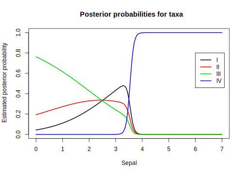

Taxonomy Data
We return to the taxonomy data used in the lecture on cluster analysis. In the file taxonomy.Rdata you find seven variables measured on plants from four different taxa. We will use multinomial regression as means for classification of taxa. A code file for performing cross-validation of classifications based on multinomial regression is found in the file CV.class.multinom.R on Fronter. Throughout this exercise you may need to increase the number of iterations used in the Maximum Likelihood estimation procedure. The default is 100 iterations. For example, in exercise a. maxit = 200 should suffice.
- Use multinomial regression to model the probabilities of the various taxa as a function of the variable
Sepal. Save the model as an object calledmod1.multi. Use summary to display the results.
- Use multinomial regression to model the probabilities of the various taxa as a function of the variable
mod1.multi <- multinom(Taxon ~ Sepal, data = taxonomy, maxit = 200)# weights: 12 (6 variable)
initial value 166.355323
iter 10 value 98.990404
iter 20 value 98.141917
iter 30 value 98.100674
iter 40 value 98.097605
iter 50 value 98.096106
iter 60 value 98.095900
iter 70 value 98.095310
iter 80 value 98.095057
iter 90 value 98.094619
iter 100 value 98.092238
final value 98.092209
convergedsummary(mod1.multi)Call:
multinom(formula = Taxon ~ Sepal, data = taxonomy, maxit = 200)
Coefficients:
(Intercept) Sepal
II 1.49 -0.593
III 2.86 -1.148
IV -48.04 13.738
Std. Errors:
(Intercept) Sepal
II 2.31 0.914
III 2.32 0.924
IV 84.93 24.439
Residual Deviance: 196
AIC: 208 - What are the estimated linear predictors \(\eta_j\) for each of the four taxa, \(j=1,2,3,4\)?
First we extract the estimated regression coefficients. Remember that for the reference level taxon the regression coefficients are assumed equal to zero. We therefore add a row of zeros for this taxon (here taxon = 1).
summod1.multi <- summary(mod1.multi)
co <- summod1.multi$coefficients
co <- rbind(c(0,0),co)
rownames(co)[1] <- "I"
co (Intercept) Sepal
I 0.00 0.000
II 1.49 -0.593
III 2.86 -1.148
IV -48.04 13.738This gives the following linear predictors:
\[\eta_1 = 0 + 0\cdot \text{Sepal} = 0\]
\[\eta_2 = 1.49 - 0.593\cdot \text{Sepal}\]
\[\eta_3 = 2.86 - 1.15\cdot \text{Sepal}\]
\[\eta_4 = -48.0 + 13.7\cdot \text{Sepal}\]
- What is the most probable taxon according to this model for a plant with average value of
Sepal? (Hint: If your coefficients are stored in a matrix calledcoyou may compute the probabilities for each taxon by using the codeprobs <- exp(co[,1]+co[,2]*x)/sum(exp(co[,1]+co[,2]*x))wherexis the value of interest forSepal.
- What is the most probable taxon according to this model for a plant with average value of
x <- mean(taxonomy$Sepal)
probs <- exp(co[ ,1] + co[ ,2] * x) / sum(exp(co[ ,1] + co[ ,2] * x))
probs I II III IV
0.433455 0.324557 0.241505 0.000483 maxp <- which.max(probs)
maxpI
1 We see that taxon I is the most probable with a probability equal to 0.433.
Extra: The following figure shows the probabilities of each taxon for various values of Sepal. Remember that these probabilities are the posterior probability estimates for the class in a classification terminology. We classify to the most probable class given the observed predictor values.
xvector <- seq(0,7, by = 0.05)
probfunc <- function(x){
exp(co[ ,1] + co[ ,2] * x) / sum(exp(co[ ,1] + co[ ,2] * x))
}
probmat <- t(sapply(xvector, probfunc))
matplot(xvector, probmat, lty = 1, type = "l", lwd = 2,
main = "Posterior probabilities for taxa",
xlab = "Sepal", ylab = "Estimated posterior probability")
legend(6, 0.8, legend = c("I", "II", "III", "IV"), lty = 1, col = 1:4, lwd = 2)
We observe that taxon III is the most probable for Sepal<2.5, taxon I for 2.5 < Sepal < 3.5 and taxon IV for Sepal >= 3.5. Taxon 2 is the most probable taxon only for Sepal \(\approx\) 2.5.
- Execute the following plot command:
plot(Sepal ~ Taxon, data=taxonomy). Use the figure to explain the result from exercise c.
- Execute the following plot command:
plot(Sepal ~ Taxon, data = taxonomy)
We see that taxon I has the median (and probably also the mean) closest to the average Sepal length which is 3.0. Taxa II and III are very similar, but slightly further away, hence their probabilities are a bit smaller. Taxa IV has Sepal lengths much larger than the average and is thus the least probable taxon.
- Repeat the taxon classification of exercise c. by means of the
predict()- function.
- Repeat the taxon classification of exercise c. by means of the
predict(mod1.multi,newdata = data.frame(Sepal = mean(taxonomy$Sepal)))[1] I
Levels: I II III IV- Use similar plots like in d. to identify other variables which are promising with regard to separating taxa I, II and III (Sepal is already a good variable to distinguish taxon IV from the others). Fit an extended model with the variables you have chosen and save the model as an object called
mod2.multi.
- Use similar plots like in d. to identify other variables which are promising with regard to separating taxa I, II and III (Sepal is already a good variable to distinguish taxon IV from the others). Fit an extended model with the variables you have chosen and save the model as an object called
I have found two variables which are promising; Leaf and Petiole, as shown in the figures below.
plot(Leaf ~ Taxon, data = taxonomy)
plot(Petiole ~ Taxon, data = taxonomy)
Leaf seems to distinguish taxon III from the others, and Petiole may separate taxa I and II.
I therefore fit a model with Sepal, Leaf and Petiole as predictors for taxa. This model requires many iterations in the estimation process. I set maxit = 5000 to be sure. (trace =FALSE supresses a long list of convergence details)
mod2.multi <- multinom(Taxon ~ Sepal + Leaf + Petiole , data = taxonomy,
maxit = 5000, trace = FALSE)
summary(mod2.multi)Call:
multinom(formula = Taxon ~ Sepal + Leaf + Petiole, data = taxonomy,
maxit = 5000, trace = FALSE)
Coefficients:
(Intercept) Sepal Leaf Petiole
II 783.7 30.1 34.64 -93.5
III -87.9 -102.1 508.68 -70.2
IV -67.8 82.8 8.46 -20.9
Std. Errors:
(Intercept) Sepal Leaf Petiole
II 24486 3661 1412 2791
III 2314 5317 5940 2624
IV 133 12164 7095 7120
Residual Deviance: 0.0002
AIC: 24 - Use a Chis-square test to test the joint significance of the extra variables you added as you extended
mod1.multitomod2.multi.
We test whether the difference in deviances between the two models is significant.
dev.diff <- -2 * (logLik(mod1.multi) - logLik(mod2.multi))
pchisq(dev.diff, 6, lower = FALSE)'log Lik.' 1.23e-39 (df=6)The p-value indicates that Leaf and Petiole are highly significant in addition to Sepal as predictors in the model.
- Use the
predict()function onmod2.multiwithnewdata=taxonomyto classify all plants in the dataset to taxa. Then apply theconfusion()function in themixlm- package to compute the classification performance of the multinomial model. What is the accuracy and apparent classification error?
- Use the
pred.all <- predict(mod2.multi, newdata = taxonomy)
mixlm::confusion(taxonomy$Taxon, pred.all) True
Predicted I II III IV
I 30 0 0 0
II 0 30 0 0
III 0 0 30 0
IV 0 0 0 30
Total 30 30 30 30
Correct 30 30 30 30
Proportions correct
I II III IV
1 1 1 1
N correct/N total = 120/120 = 1I get an accuracy of 1 and an apparent classification error (APER) of 0. That is, a perfect “fit” to the data. (Note the R-code mixlm:: for extracting the confusion function from mixlm without loading the entire package).
- We should watch out for over-fitting. Use the
CV.class.multinom()function to run a Leave-One-Out Cross-validation to validate themod2.multimodel.
- We should watch out for over-fitting. Use the
#source("CV.class.multinom.R")
CVres <- CV.class.multinom(mod2.multi,data = taxonomy, trace = FALSE) True
Predicted I II III IV
I 28 1 1 0
II 1 29 1 0
III 1 0 28 0
IV 0 0 0 30
Total 30 30 30 30
Correct 28 29 28 30
Proportions correct
I II III IV
0.933 0.967 0.933 1.000
N correct/N total = 115/120 = 0.958The cross-validation gave 5 mis-classifications. Taxon IV is perfectly classified, but there are some mix-up’s between taxa I, II and III. The accuracy is still high (0.96) and the total classification error is correspondingly small (0.04).